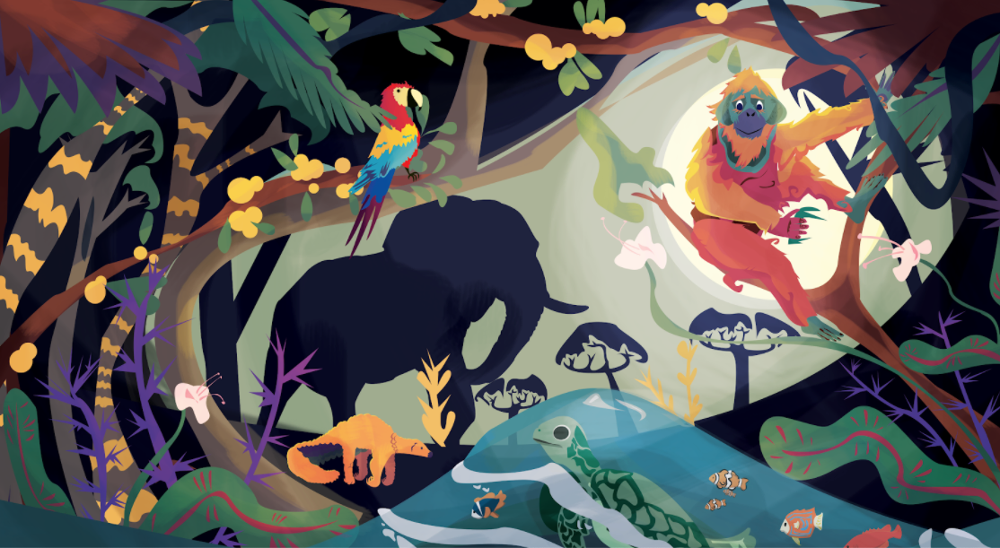

Wildlife: Loss, Damage, & Sanctions. A project on conceptualising the harm from & remedies to illegal wildlife trade.
Jan 11, 2021
The WILDS Project is collaborating with award winning filmmaker, Colin Sytsma, and the talented designer, Jax Schwanke, on a short, animated film about illegal wildlife trade-- and the conservation litigation that could respond to it. It highlights the many harms caused by illegal trade, and explains how pioneering civil lawsuits could help provide remedies, holding perpetrators responsible for fixing the harm the cause.
The WILDS Project is supported by the UK Government through the Illegal Wildlife Trade (IWT) Challenge Fund Conservation Governance Lab, Lancaster Environment Centre, Library Ave, Bailrigg, Lancaster LA1 4AP, UK ©2021 by WILDS.
Sebagaimana kontraknya, proyek ini telah berakhir pada 31 Mei 2021.
Naskah disalin sepenuhnya dari https://jacobphelps.wixsite.com/wilds